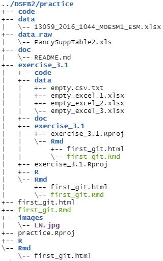
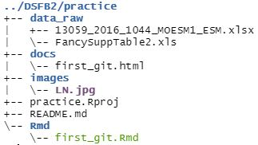

3 Applying the Guerrilla analytics framework
When showing my knowledge of the Guerrilla analytics framework, I wanted to take a project folder that would really transform. I found such a folder in my practice project directory.
As you can see below, it’s rather messy. While the folder names are quite clear, the contents are not so much; there are some empty folders, some duplicates and even a folder with another project.
knitr::include_graphics(here::here("images", "dir_tree_pre.jpg"))
Rather overdue for a clean-up!
After removing all unneccesary folders and files from the project directory and storing all the desired files in the right folders, the directory looks like this!
knitr::include_graphics(here::here("images", "dir_tree_post.jpg"))